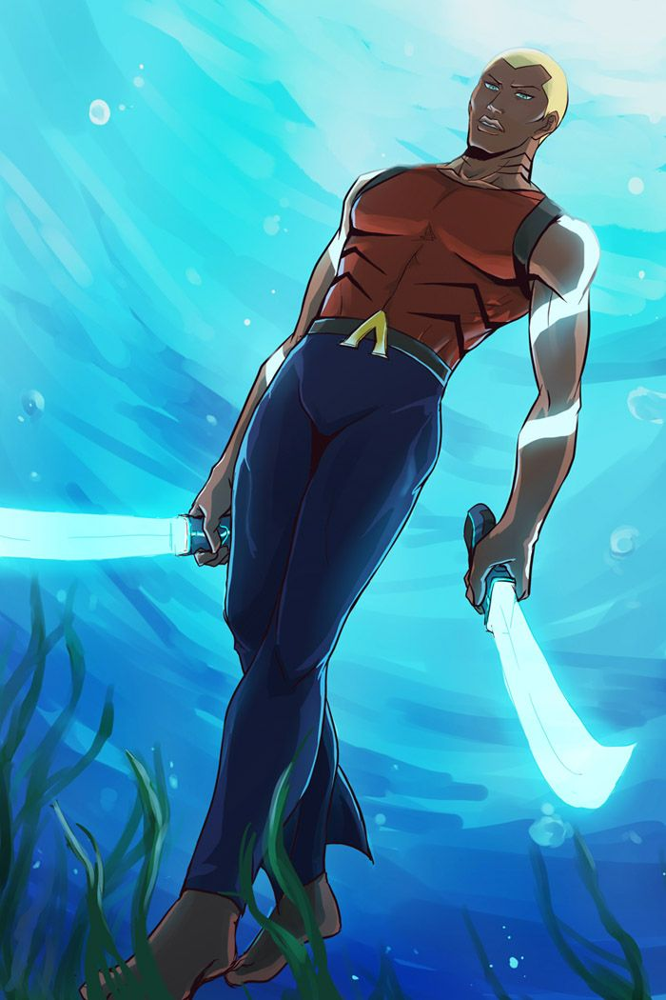

Herois DC
Aquaman:
Nos anos 1970, a história mudou novamente e Aquaman se tornou Orin, filho da Rainha Atlanna e de Atlan, um poderoso mago da cidade de Poseidonis. Com o advento da nova cronologia da DC, com o selo Os Novos 52, Aquaman voltou a ser Arthur, e ter a mesma origem da era dourada.
Aqualed:
Aqualad, também conhecido como Garth é um jovem ajudante do Aquaman. Como um adulto, ele tomou o nome de Tempest. Ele é um membro da Família Aquaman juntamente com outros ajudantes, incluindo Aquagirl e Golfinho. 
Mera:
Mera é uma super-heroína do universo DC Comics, conhecida por reinar Atlântida ao lado do seu marido, Aquaman. A personagem surgiu pela primeira vez em 1963, na HQ #Aquaman #11 e foi criada por Jack Miller e Nick Cardy.
Vilões DC
Arraia Negra:
é um personagem antigo e possuía uma história de origem bem diferente nos quadrinhos antigos. Em sua versão antiga, Arraia Negra era uma criança autista que só conseguia se acalmar ou sentir algum tipo de prazer quando estava em contato com água fria.
Sereia
Sereia é um nome usado por vários vilões no Universo DC. A original era Hila, irmã gêmea da esposa de Aquaman, Mera. Ela é o líder de um esquadrão da morte enviado por inimigos de Aquaman em Xebel para assassiná-lo. A segunda Sereia era uma sereia que se tornou um eco-terrorista.
Mestre dos mares
Ormi é o meio-irmão maligno de Aquaman, filho de seu pai e de outra mulher. Determinado a usurpar o trono de Atlântida, ele emprega pirataria e terrorismo para alcançar seus objetivos.
Voltar